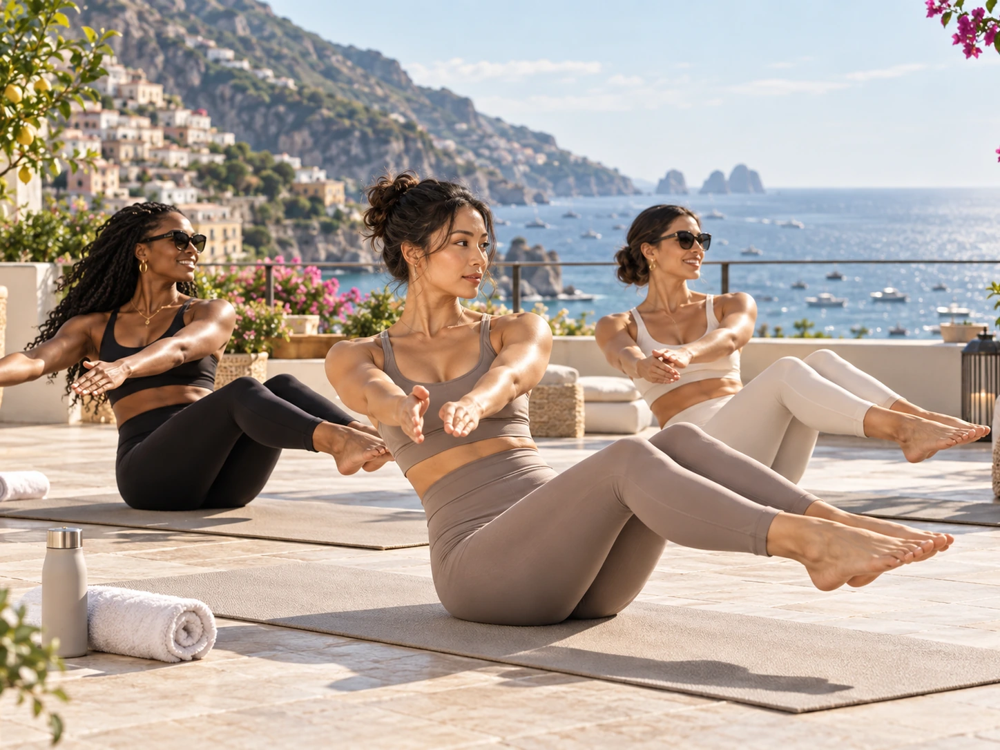
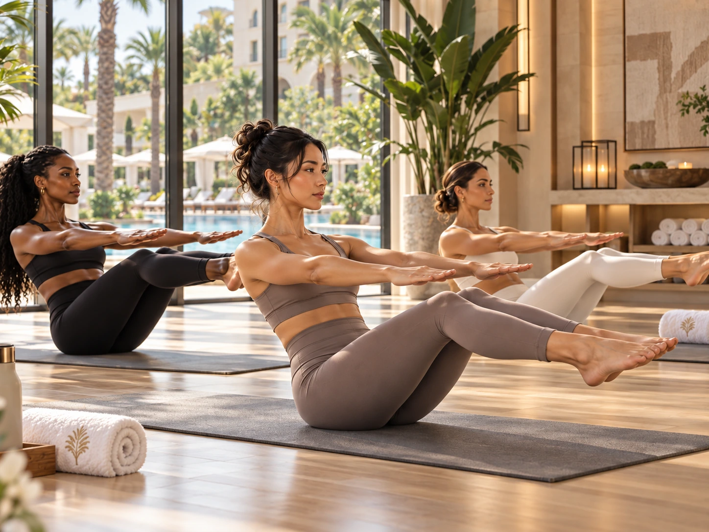

Stop trying to recreate your normal week
Vacation days are different. Your sleep, meals, schedule, and surroundings change, so expecting the exact same workout routine can make movement feel like another task on the itinerary.
A better goal is to keep your body moving in ways that fit the place. That might mean walking through a city, swimming before breakfast, hiking to a viewpoint, or taking one local Pilates class because it sounds fun.
Use the ten minute rule
If you want a little structure, give yourself ten minutes. Do a few rounds of squats, lunges, bridges, planks, and mobility, then decide if you want more. Most of the benefit is simply keeping the habit alive.
You do not need equipment for a useful session. A hotel room floor, a towel, and enough space to move can be plenty.

Build movement into what you already planned
Choose the scenic walk instead of a short ride when it makes sense. Book a snorkeling trip, rent bikes, explore a market on foot, or take the stairs to a viewpoint. Those things count even if they never feel like a workout.
This is also why travel can be a good reset if your normal routine feels stale. Movement becomes part of the experience instead of something separate from it.
Eat and drink like you are still a human being
You can enjoy vacation food without turning every meal into a challenge. Eat what you actually want, notice when you are full, drink water regularly, and do not try to compensate for a big dinner with an aggressive workout the next morning.
A relaxed trip is easier to enjoy when your energy is stable and your body is not swinging between restriction and overdoing it.
Come home without needing a punishment week
The best vacation routine is one that lets you enjoy the trip and return feeling normal. You do not need to earn food, make up for rest days, or jump straight into your hardest class the second you get home.
Resume your regular schedule, give yourself a day or two to settle in if travel was tiring, and move on.